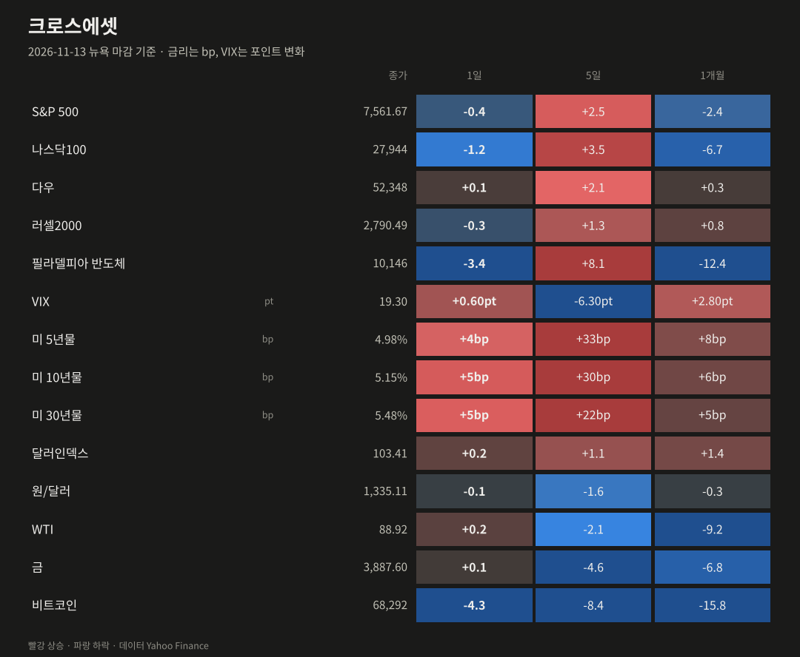
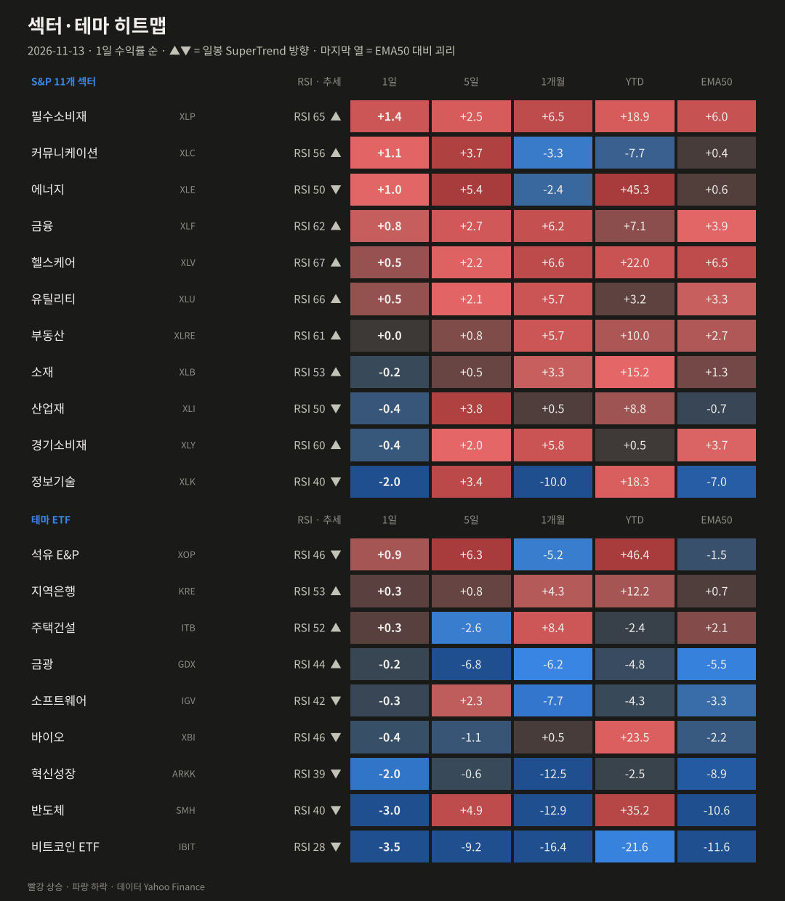
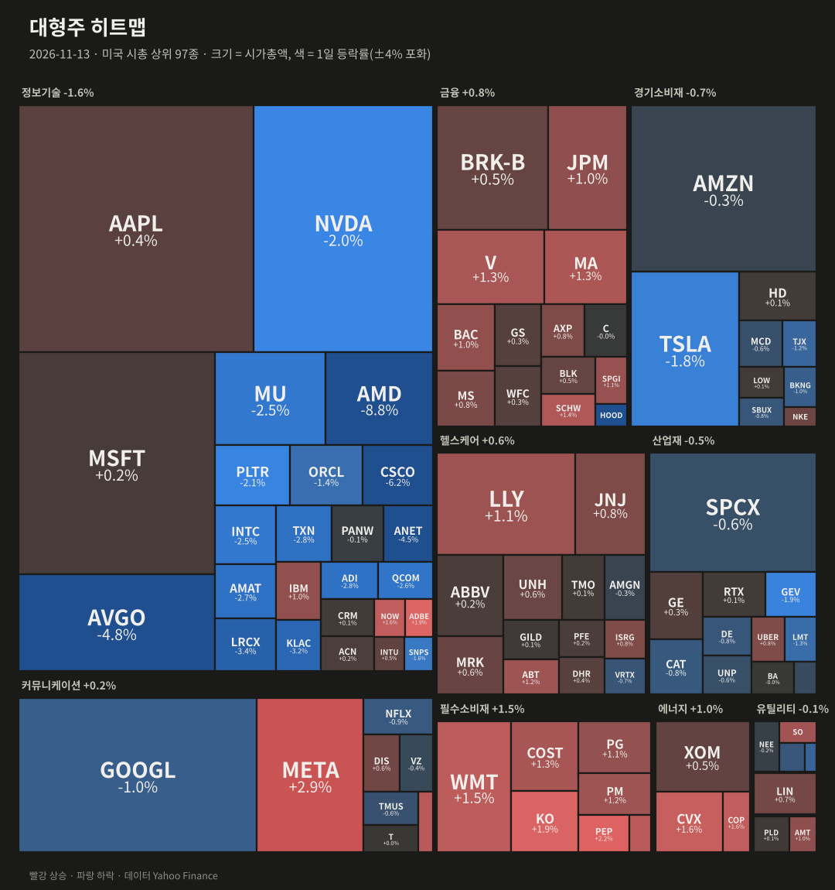
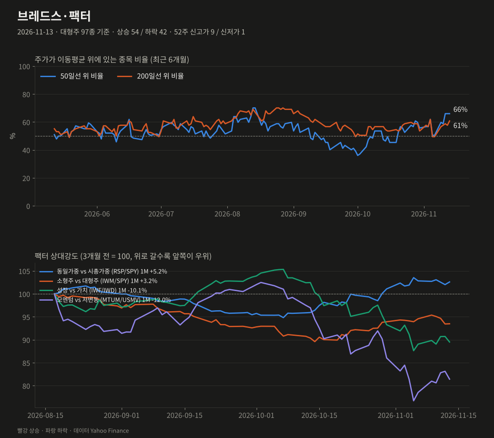
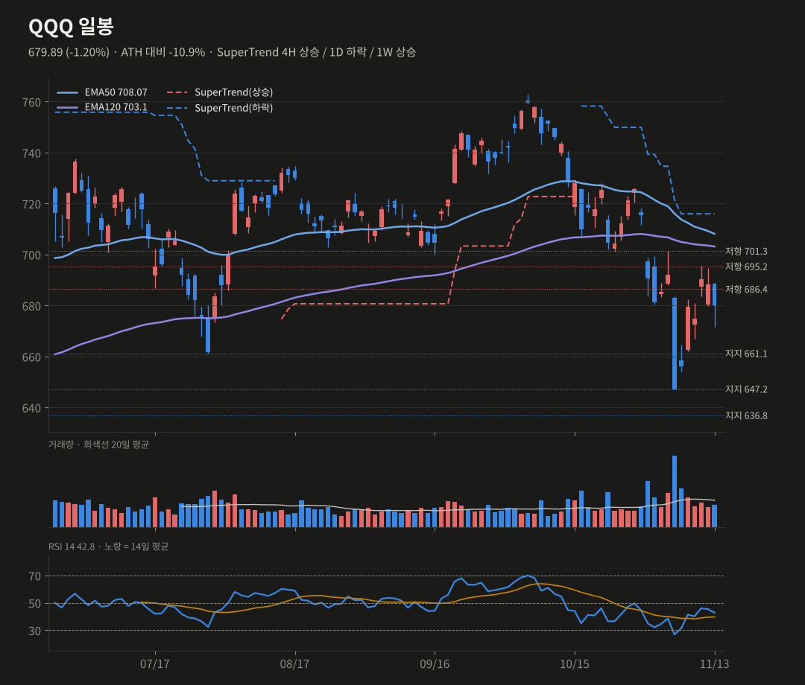
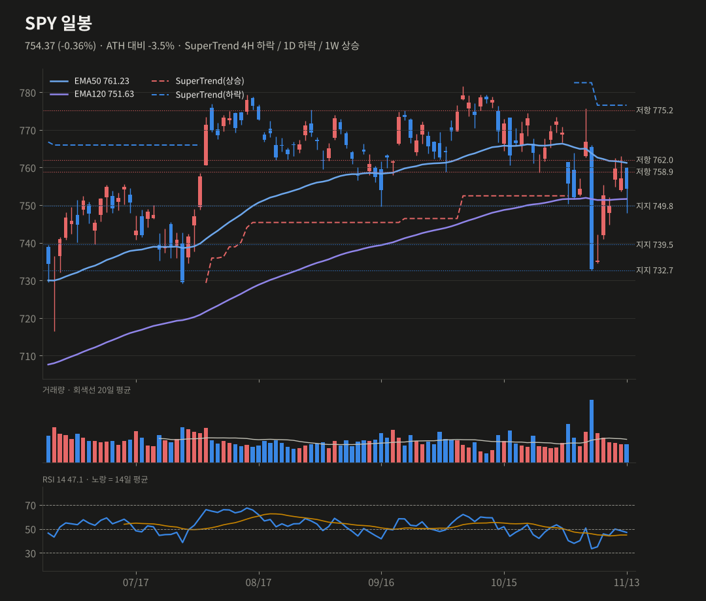
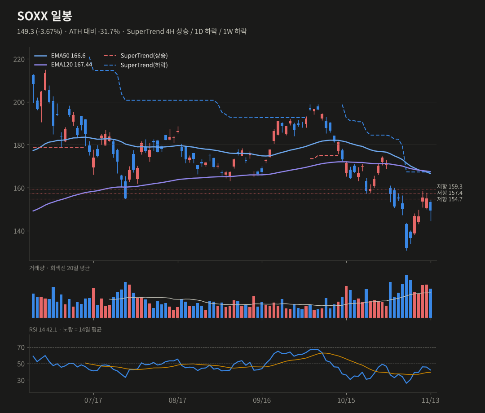
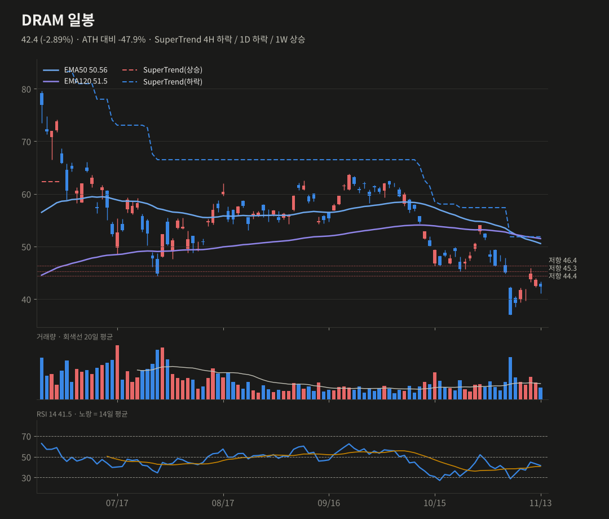

미증시 마감 브리핑
11/13(금) 뉴욕 마감 기준 · 생성 2026-11-14 07:41 KST
엔비디아 여파가 이어지며 반도체가 다시 밀렸어요(SOX −3.4%, AMD −8.8%). 나스닥100 −1.2%로 마감했고, 경기방어주로 돈이 옮겨갔어요.
S&P 5007,561.67-0.40%
나스닥10027,944-1.22%
다우52,348+0.10%
러셀20002,790.49-0.31%
반도체(SOX)10,146-3.43%
VIX19.30+0.60pt
미 10년물5.15%+5.10bp
원/달러1,335.11-0.09%
요약
- AMD −8.8%, CSCO −6.2%로 SOX −3.4%였어요. 엔비디아 리스크가 반도체 전반으로 번졌어요.
- PPI는 예상을 밑돌았지만(+0.3%) 10년물은 5.15%로 사흘째 올랐어요. 비트코인은 7만 달러를 이탈했어요.
- 주간으로는 QQQ +3.6%, SPY +2.6%였지만, SOXX는 주봉 EMA50 아래로 마감했어요.
- QQQ 671.7, SPY 749.8, SOXX 146.6이 다음 주 지지선이에요.
종합 판단
엔비디아 리더십·정책 리스크가 반도체 전반으로 다시 번지면서, 주간 상승분 일부를 반납했어요. 금리가 5.15%까지 올라 고밸류 기술주에 부담이 계속되고, 돈은 필수소비재·에너지 같은 방어 업종으로 이동하고 있어요. QQQ와 SOXX는 단기 지지를 잃어 확률을 낮췄어요. SPY는 일봉 EMA120 위에서 중립을 유지하고 있어요.
엔비디아 리더십·정책 리스크가 반도체 전반으로 다시 번지면서, 주간 상승분 일부를 반납했어요. 금리가 5.15%까지 올라 고밸류 기술주에 부담이 계속되고, 돈은 필수소비재·에너지 같은 방어 업종으로 이동하고 있어요. QQQ와 SOXX는 단기 지지를 잃어 확률을 낮췄어요. SPY는 일봉 EMA120 위에서 중립을 유지하고 있어요.
무엇이 시장을 움직였나
- 반도체 재매도: AMD −8.8%, CSCO −6.2%, AVGO −4.8%, ANET −4.5%, LRCX −3.4%였어요. 시스코는 실적은 좋았지만 총이익률 하락과 가이던스 우려, 목표가 하향이 겹쳤어요.
- 엔비디아 후폭풍: 상원 은행위원장이 젠슨 황(12/3)과 러트닉 상무장관(12/10)에게 대중국 칩 판매 관련 증언을 요청했어요. 수출통제를 둘러싼 행정부 내 이견도 보도됐어요.
- 10월 PPI: 전월비 +0.3%로 예상 0.4%를 밑돌았지만, 전년비 +6.5%로 2022년 11월 이후 최대예요. 10년물은 5.15%(+5bp)로 사흘째 올랐어요.
- 위험자산: 비트코인이 −4.3%로 6.8만 달러까지 밀려 8월 이후 처음 7만 달러를 깼어요. 24시간 청산 규모는 13억 달러 이상이에요.
- 방어 강세: 필수소비재(+1.4%), 커뮤니케이션(+1.1%, META +2.9%), 에너지(+1.0%)가 올랐어요. 주간 기준 QQQ +3.6%, SPY +2.6%로 주간 상승은 유지했어요.

| 자산 | 종가 | 1일 | 5일 | 1개월 |
|---|---|---|---|---|
| S&P 500 | 7561.67 | -0.40% | +2.51% | -2.36% |
| 나스닥100 | 27943.74 | -1.22% | +3.53% | -6.65% |
| 다우 | 52347.55 | +0.10% | +2.07% | +0.33% |
| 러셀2000 | 2790.49 | -0.31% | +1.32% | +0.84% |
| 필라델피아 반도체 | 10146.32 | -3.43% | +8.05% | -12.39% |
| VIX | 19.3 | +0.60pt | -6.30pt | +2.80pt |
| 미 5년물 | 4.981 | +3.6bp | +33.3bp | +8.2bp |
| 미 10년물 | 5.154 | +5.1bp | +29.5bp | +6.5bp |
| 미 30년물 | 5.481 | +4.8bp | +22.1bp | +5.2bp |
| 달러인덱스 | 103.41 | +0.23% | +1.09% | +1.38% |
| 원/달러 | 1335.11 | -0.09% | -1.57% | -0.32% |
| WTI | 88.92 | +0.20% | -2.10% | -9.24% |
| 금 | 3887.6 | +0.06% | -4.60% | -6.77% |
| 비트코인 | 68291.69 | -4.28% | -8.44% | -15.77% |

| 섹터·테마 | 1일 | 5일 | 1개월 | YTD | RSI | 일봉 추세 |
|---|---|---|---|---|---|---|
| 필수소비재 XLP | +1.42% | +2.52% | +6.54% | +18.9% | 65 | 상승 |
| 커뮤니케이션 XLC | +1.05% | +3.72% | -3.34% | -7.7% | 56 | 상승 |
| 에너지 XLE | +0.98% | +5.42% | -2.40% | +45.3% | 50 | 하락 |
| 석유 E&P XOP | +0.92% | +6.35% | -5.18% | +46.4% | 46 | 하락 |
| 금융 XLF | +0.81% | +2.66% | +6.17% | +7.1% | 62 | 상승 |
| 헬스케어 XLV | +0.54% | +2.19% | +6.58% | +22.0% | 67 | 상승 |
| 유틸리티 XLU | +0.52% | +2.11% | +5.74% | +3.2% | 66 | 상승 |
| 지역은행 KRE | +0.30% | +0.75% | +4.29% | +12.2% | 53 | 상승 |
| 주택건설 ITB | +0.26% | -2.61% | +8.37% | -2.4% | 52 | 상승 |
| 부동산 XLRE | +0.02% | +0.84% | +5.67% | +10.0% | 61 | 상승 |
| 소재 XLB | -0.21% | +0.54% | +3.30% | +15.2% | 53 | 상승 |
| 금광 GDX | -0.24% | -6.80% | -6.18% | -4.8% | 44 | 상승 |
| 소프트웨어 IGV | -0.26% | +2.34% | -7.67% | -4.3% | 42 | 하락 |
| 산업재 XLI | -0.39% | +3.76% | +0.53% | +8.8% | 50 | 하락 |
| 경기소비재 XLY | -0.40% | +2.04% | +5.79% | +0.5% | 60 | 상승 |
| 바이오 XBI | -0.43% | -1.09% | +0.51% | +23.5% | 46 | 하락 |
| 혁신성장 ARKK | -1.97% | -0.62% | -12.49% | -2.5% | 39 | 하락 |
| 정보기술 XLK | -2.01% | +3.36% | -10.00% | +18.3% | 40 | 하락 |
| 반도체 SMH | -2.99% | +4.91% | -12.90% | +35.2% | 40 | 하락 |
| 비트코인 ETF IBIT | -3.52% | -9.19% | -16.42% | -21.6% | 28 | 하락 |

| 상승 상위 | 1일 | 거래량(20일 대비) | 하락 상위 | 1일 | 거래량 |
|---|---|---|---|---|---|
| META | +2.90% | x0.63 | AMD | -8.75% | x1.47 |
| PEP | +2.24% | x0.82 | CSCO | -6.24% | x1.46 |
| ADBE | +1.90% | x0.61 | AVGO | -4.76% | x1.18 |
| KO | +1.86% | x0.97 | ANET | -4.52% | x0.96 |
| CVX | +1.64% | x0.91 | HOOD | -4.29% | x0.97 |
| COP | +1.59% | x0.83 | LRCX | -3.36% | x0.8 |

대형주 97종: 상승 54 / 하락 42 · 50일선 위 66.0% (전일 66.0%, 5일 전 50.5%) · 200일선 위 60.8% · 52주 신고가 9 / 신저가 1
지수는 내렸지만 오른 종목 54, 내린 종목 42였어요. 동일가중(RSP +0.20%)이 시총가중보다 0.56%p 강해 기술주에서 방어주로 옮기는 로테이션이 재개됐어요. 52주 신고가는 9개였어요.
| 팩터 스프레드 | 1일 | 5일 | 1개월 |
|---|---|---|---|
| 동일가중 vs 시총가중 (RSP/SPY) | +0.56% | -0.22% | +5.24% |
| 소형주 vs 대형주 (IWM/SPY) | +0.04% | -1.15% | +3.22% |
| 성장 vs 가치 (IWF/IWD) | -1.34% | +0.52% | -10.05% |
| 모멘텀 vs 저변동 (MTUM/USMV) | -2.06% | +3.68% | -12.01% |
기술적 분석 · 확률
TradingView 설정과 맞춘 지표(EMA50·EMA120, SuperTrend ATR20×4, RSI14, MACD 12/26/9). 확률은 차트 기반 추정치예요.
QQQ 679.89 -1.20%
SuperTrend 4H 상승 / 1D 하락 / 1W 상승 · RSI 42.81
단기 반등 50% (-5) · 스윙 상승 35% (-5)
686.4 지지를 잃고 679.9로 주봉을 마감했어요. 일봉 히스토그램은 0선 직전(−0.09)이지만, 4H 히스토그램이 꺾이고 주봉 히스토그램은 다시 확대됐어요(−9.65 → −9.88). 주봉 EMA50(671.7)이 1차 방어선이에요.
상방 686.4 회복 → 695.3, 701.3
하방 671.7 이탈 → 661.1, 649.6(주봉 SuperTrend)
SuperTrend 4H 상승 / 1D 하락 / 1W 상승 · RSI 42.81
단기 반등 50% (-5) · 스윙 상승 35% (-5)
686.4 지지를 잃고 679.9로 주봉을 마감했어요. 일봉 히스토그램은 0선 직전(−0.09)이지만, 4H 히스토그램이 꺾이고 주봉 히스토그램은 다시 확대됐어요(−9.65 → −9.88). 주봉 EMA50(671.7)이 1차 방어선이에요.
상방 686.4 회복 → 695.3, 701.3
하방 671.7 이탈 → 661.1, 649.6(주봉 SuperTrend)
SPY 754.37 -0.36%
SuperTrend 4H 하락 / 1D 하락 / 1W 상승 · RSI 47.08
단기 반등 50% · 스윙 상승 40%
일봉 EMA120(751.6) 위에서 마감했고, 일봉 MACD는 골든크로스 직전(히스토그램 −0.03)이에요. 동일가중 강세가 받치는 대신 758.9 저항을 계속 못 넘고 있어요.
상방 758.9 돌파 → 762.0, 765.7
하방 749.8 이탈 → 739.5, 732.7
SuperTrend 4H 하락 / 1D 하락 / 1W 상승 · RSI 47.08
단기 반등 50% · 스윙 상승 40%
일봉 EMA120(751.6) 위에서 마감했고, 일봉 MACD는 골든크로스 직전(히스토그램 −0.03)이에요. 동일가중 강세가 받치는 대신 758.9 저항을 계속 못 넘고 있어요.
상방 758.9 돌파 → 762.0, 765.7
하방 749.8 이탈 → 739.5, 732.7
SOXX 149.3 -3.67%
SuperTrend 4H 상승 / 1D 하락 / 1W 하락 · RSI 42.14
단기 반등 50% (-10) · 스윙 상승 35% (-5)
−3.7%로 154.7 지지를 잃었고, 주봉 종가가 EMA50(151.6) 아래로 마감했어요. 4H RSI는 50 아래, 4H 히스토그램은 꺾였어요. 일봉 MACD 골든크로스는 유지되고 있어요(+0.32).
상방 151.6 회복 → 154.7, 159.3
하방 146.6 이탈 → 140, 131.9
SuperTrend 4H 상승 / 1D 하락 / 1W 하락 · RSI 42.14
단기 반등 50% (-10) · 스윙 상승 35% (-5)
−3.7%로 154.7 지지를 잃었고, 주봉 종가가 EMA50(151.6) 아래로 마감했어요. 4H RSI는 50 아래, 4H 히스토그램은 꺾였어요. 일봉 MACD 골든크로스는 유지되고 있어요(+0.32).
상방 151.6 회복 → 154.7, 159.3
하방 146.6 이탈 → 140, 131.9
DRAM 42.4 -2.89%
SuperTrend 4H 하락 / 1D 하락 / 1W 상승 · RSI 41.48
단기 반등 45% (-5) · 스윙 상승 30%
−2.9%로 이틀째 밀렸어요. 일봉 히스토그램은 0선(0.00)이고, 4H 히스토그램은 꺾였어요. 주봉 EMA120(38.5)까지 지지가 비어 있고, 44.4~46.6 매물대가 저항이에요.
상방 44.4 회복 → 46.2~46.6
하방 41.5 이탈 → 38.5(주봉 EMA120)
SuperTrend 4H 하락 / 1D 하락 / 1W 상승 · RSI 41.48
단기 반등 45% (-5) · 스윙 상승 30%
−2.9%로 이틀째 밀렸어요. 일봉 히스토그램은 0선(0.00)이고, 4H 히스토그램은 꺾였어요. 주봉 EMA120(38.5)까지 지지가 비어 있고, 44.4~46.6 매물대가 저항이에요.
상방 44.4 회복 → 46.2~46.6
하방 41.5 이탈 → 38.5(주봉 EMA120)




일정
- 엔비디아 실적·후임 CEO 일정
- 12/3 젠슨 황, 12/10 러트닉 상원 증언 요청
- 12/8~9 FOMC(25bp 인상 예상)
출처
- Stock Market Today (Nov. 13, 2026): Nasdaq, S&P 500 end lower as Nvidia drama continues to roil tech (TheStreet)
- AMD Sinks 10.5%, Nasdaq 100 Falls 1.7%: Stock Market Today (Benzinga)
- Stock Market Midday, Nov. 13: Nasdaq Plunges as Nvidia Turmoil Deepens and Treasury Yields Hit 5% (Motley Fool)
데이터 Yahoo Finance·Nasdaq. 색은 한국식(빨강 상승·파랑 하락). 투자 판단의 참고 자료예요. 지난 브리핑